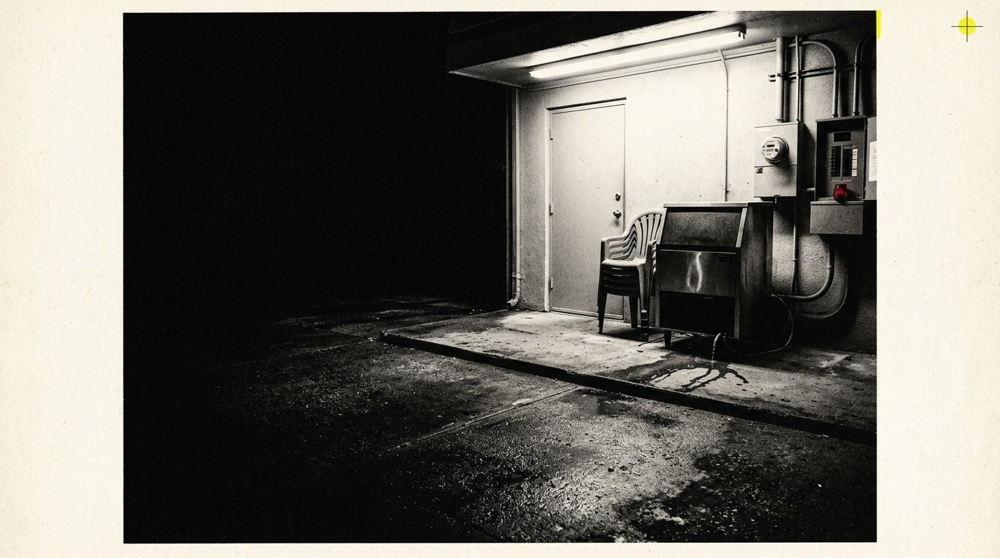

At twelve-forty the pump changed pitch. Eli heard it through the cinderblock wall and set down the Styrofoam cup without looking at it. Outside, rain moved sideways across the security light.
The old men said every machine had two voices: the one it used for work and the one it used before it broke. Eli had never believed them, but he knew this sound. It was a thin metal complaint under the motor’s steady throat.
He walked the perimeter with a flashlight. The ditch was already level with the grass. Across the field, the rice bent in one direction as though a hand had passed over it and not yet lifted.

His father had worked this station before the parish automated the north gates. There were still pencil marks inside the control cabinet: dates, initials, a phone number disconnected twenty years ago. Eli touched none of them.
At three-ten the complaint disappeared. The motor ran clean. That frightened him more. He stood with his hand above the red cutoff and listened to the building breathe.